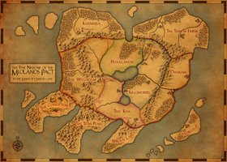
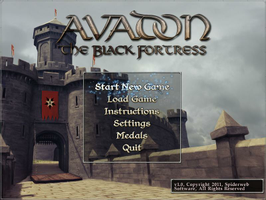
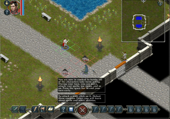
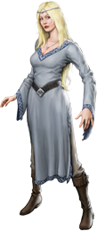

Avadon - The Black Fortress
Dieser Artikel wurde für die folgenden Ubuntu-Versionen getestet:
Ubuntu 16.04 Xenial Xerus
Zum Verständnis dieses Artikels sind folgende Seiten hilfreich:
Avadon: The Black Fortress  ist der erste Teil einer kommerziellen Rollenspiel-Saga, welcher auf dem fiktiven Kontinent Lynaeus spielt. Dieser wurde zwischen zwei verfeindeten Fraktionen geteilt. Es ist der Pakt zwischen fünf Nationen - dieser ist durch eine Verschwörung in Gefahr...
ist der erste Teil einer kommerziellen Rollenspiel-Saga, welcher auf dem fiktiven Kontinent Lynaeus spielt. Dieser wurde zwischen zwei verfeindeten Fraktionen geteilt. Es ist der Pakt zwischen fünf Nationen - dieser ist durch eine Verschwörung in Gefahr...
Der Spieler stellt eine Truppe Krieger zusammen. Die Reise führt in die entlegensten Teile von Lynaeus. Neue Fähigkeiten, Schätze und Gefahren liegen vor der Gruppe. Gelingt es die Verschwörer zu finden und den Frieden zu bringen?
|  |  |  |
| Lynaeus | Hauptmenü | Tutorial |
Installation¶
Das Spiel aus der Aktion The Humble Bundle for Android 2 von der in der Email angegebenen Seite herunterladen. Anschließend Ausführrechte [1] setzen und die Installation einleiten [2]:
./avadon-linux-VERSIONSNUMMER-bin
Das Spiel kann im Menü über Avadon: The Black Fortress gestartet werden.
Hauptmenü¶
| Hauptmenü | |
| Menüpunkt | Beschreibung |
| "Start New Game" | Einen neuen Charakter erstellen und mit dem Abenteuer beginnen. |
| "Load Game" | Gespeichertes Spiel fortsetzen. |
| "Instructions" | Handbuch innerhalb des Spiels lesen. |
| "Settings" | Spieleinstellungen anpassen (u.a. Klang, Spielschwierigkeit und Grafikeinstellungen). Tastatureinstellungen ("Keyboard Shortcuts") können im laufenden Spiel über das Spielmenü, welches man über Esc erreicht, vorgenommen werden. |
| "Medals" | Die bisher verdienten Medaillien anzeigen - 15 können insgesamt, durch die Erfüllung von Aufgaben, erlangt werden. |
| "Quit" | Spiel beenden. |
Handbuch¶
Ein englischsprachiges Handbuch zum Spiel kann von steampowered.com  als PDF heruntergeladen werden. Hier "Handbuch anzeigen" aufrufen.
als PDF heruntergeladen werden. Hier "Handbuch anzeigen" aufrufen.
Tastenkürzel¶
| Tastenkürzel | |
| Taste(n) | Funktion |
| A | Fähigkeit anwenden |
| I | Inventar |
| G | Gegenstand aufnehmen |
| F | Kampf beginnen/beenden |
| F5 - F8 | Schnellspruchtaste |
| F9 - F12 | Gegenstände zur sofortigen Verwendung ablegen |
| F1 | Handbuch |
| F3 | Schnellspeichern |
| F4 | Schnellladen |
| W | Primärwaffe ändern |
| Pause | |
| Esc | Spielmenü aufrufen |
Deinstallation¶
Zur Entfernung des Spiels, im Installationsverzeichnis, das entsprechende Skript aufrufen [3]:
./uninstall-avadon.sh

Infobox¶
| Avadon: The Black Fortress | |
| Originaltitel: | Avadon: The Black Fortress |
| Genre: | Rollenspiel |
| Sprache: | |
| Veröffentlichung: | 2012 |
| Entwickler: | Spiderweb Software, Inc. |
| minimale Systemvoraussetzungen: | 1.6 GHz Prozessor / 1024 MB Arbeitsspeicher / 250 MB Festplattenspeicher |
| Medien: | Download |
| Strichcode / EAN / GTIN: | - |
| Läuft mit: | nativ |

- Erstellt mit Inyoka
-
 2004 – 2017 ubuntuusers.de • Einige Rechte vorbehalten
2004 – 2017 ubuntuusers.de • Einige Rechte vorbehalten
Lizenz • Kontakt • Datenschutz • Impressum • Serverstatus -
Serverhousing gespendet von